응용지질기사 (2018-04-28 기출문제)
1과목: 암석학 및 광물학
1. 지구에 분포하는 다음 퇴적암 중 양적으로 가장 많은 것은?
- 셰일(shale)
- 사암(sandstone)
- 석회암(limestone)
- 역암(conglomerate)
(정답률: 68%)

2. 다음 변성상 중 고압 저온을 나타내는 것은?
- 각섬석상
- 녹렴석상
- 청색편암상
- 백립암(그래뉼라이트)상
(정답률: 72%)
3. 마그마를 생성하는 주요 요인에 속하지 않는 것은?
- 압력변화
- 온도변화
- 체질변화
- 휘발성분
(정답률: 70%)
4. 다음 중 변성도가 가장 높은 암석은?
- 남정석 편암
- 녹니석 편암
- 석류석 편암
- 흑운모 편암
(정답률: 65%)
5. 다음 중 점성이 가장 적은 마그마는?
- 안산암질 마그마
- 유문암질 마그마
- 화강암질 마그마
- 현무암질 마그마
(정답률: 87%)
6. 다음 변성암의 조직 중 침상이나 판상의 광물들이 편리를 형성하지 않고 연접하여 공생하며 부분적으로 방사형을 이루는 조직은?
- 잔류(relict) 조직
- 파쇄(cataclastic) 조직
- 입상변정질(granoblastic) 조직
- 다이아블라스틱(diablastic) 조직
(정답률: 72%)
7. 다음 중 속성작용(diagenesis)에 해당하지 않는 것은?
- 교결 작용
- 분급 작용
- 다져짐 작용
- 재결정 작용
(정답률: 73%)
8. 화성암의 조직 중 1종 내지 2종 이상의 광물이 방사상으로 배열되어 외형이 공처럼 생긴 구조는?
- 문상 조직(graphic texture)
- 구과상 조직(spherulitic texture)
- 반정질 조직(hypocrystalline texture)
- 취반상 조직(glomeroporphyritic texture)
(정답률: 90%)
9. 섬장암과 유사한 화학 성분을 가지는 화산암은?
- 안산암
- 유문암
- 조면암
- 현무암
(정답률: 68%)
10. 심해저 망간단괴의 생성 기원으로 가장 적합한 것은?
- 외계에서 기원
- 물리적인 침전물
- 인위적인 배양물
- 화학적인 퇴적물
(정답률: 79%)
11. 천연광물의 생성조건을 연구하기 위하여 광물을 합성하기도 한다. 높은 온도와 압력 하의 오토클레이브 내에서 용액으로부터 결정을 성장시키는 방법으로 수정, 루비 등의 제조에 이용되는 합성법은?
- 베르누이법
- 용액 침전법
- 열수 합성법
- 쵸크랄스키법
(정답률: 82%)
12. 보엔(Bowen)의 반응계열에서 가장 늦게 정출되는 광물은?
- 석영
- 각섬석
- 정장석
- Ca-사장석
(정답률: 85%)
13. 다음 중 염산(HCL)과 반응하여 H2S 기체를 발생시키면서 용해되는 광물은?
- 석고
- 감람석
- 연망간석
- 자류철석
(정답률: 52%)
14. 다음 중 동질이상의 예가 아닌 것은?
- 규선석과 홍주석
- 방해석과 능철석
- 황철석과 백철석
- 크리스토발라이트와 코에사이트
(정답률: 70%)
15. 광물의 화학결합에 대한 설명으로 옳지 않은 것은?
- 규산염 광물의 Si-O 결합은 대략 절반은 이온결합이고 절반은 공유 결합이다.
- 원자들은 이온결합, 공유결합, 금속결합 및 반데르 바알스결합에 의하여 서로 결합되어 있다.
- 원소들 간에 존재하는 결합의 종류는 화합물을 만드는 원자들의 전자구조에 의하여 결정된다.
- 많은 광물들은 한 가지 이상의 방식으로 결합되어 있고, 이 경우에 그 광물의 물리적 성질은 가장 강한 결합방식에 의하여 결정된다.
(정답률: 69%)
16. 원자가 전자를 잃어버릴 경우 생성되는 것은?
- 양성자
- 양이온
- 음이온
- 중성자
(정답률: 68%)
17. 다음 중 광학적으로 1축성인 것은?
- 단사정계
- 등축정계
- 사방정계
- 정방정계
(정답률: 56%)
18. 광물 중에서 반사 편광 현미경에서 일반적으로 이방성(Anisotropism)현상이 가장 잘 나타나는 것은?
- 황철석(Pyrite)
- 크롬철석(Chroite)
- 황동석(Chalcopyrite)
- 유비철석(Arsenopyrite)
(정답률: 53%)
19. 결정의 방향에 따라 결정면의 크기가 다르게 발달하는 이유는?
- 방향에 따라 원자들의 점밀도가 다르기 때문이다.
- 여러 종류의 원자가 모여 결정을 이루기 때문이다.
- 원자의 공급과 결정성장의 정도에 따라 달라지기 때문이다.
- 결정면이 원자들의 배열 방향에 평행하게 발달되기 때문이다.
(정답률: 63%)
20. 단파장 자외선하에 청백색 형광을 발하는 광물은?
- 형석
- 회중석
- 사파이어
- 알렉산드라이트
(정답률: 72%)
2과목: 구조지질학
21. A, B, C 세 개의 지진계에 기록된 S-P 시간간격이 각각 2분, 4분, 3분일 때, 주어진 이동시간 곡선표(Travel-time curve)로부터 계산된 진앙으로부터 각 지진계까지의 거리에 대한 설명으로 옳은 것은?
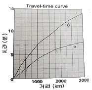
- 지진계 C가 진앙으로부터 가장 멀리 떨어져있다.
- 진앙으로부터 지진계 A까지 거리는 250km이다.
- 진앙으로부터 지진게 B까지 거리는 2250km이다.
- 진앙으로부터 지진계 C까지 거리는 1000km이다.
(정답률: 80%)
22. 우리나라의 중생대 조산운동과 관련있는 것은?
- 제주도의 형성
- 경상누층군의 퇴적
- 대보화강암의 관입
- 평안누층군의 퇴적
(정답률: 63%)
23. 판구조론에 입각한 히말라야 산맥의 생성원인으로 옳은 것은?
- 유라시아판과 태평양판의 충돌
- 유라시아판과 아라비아판의 충돌
- 유라시아판과 아프리카판의 충돌
- 유라시아판과 인도-호주판의 충돌
(정답률: 77%)
24. 성장단층(growth fault)에 대한 설명으로 옳지 않은 것은?
- 전형적인 정단층이다.
- 퇴적동시성 단층이라고도 한다.
- 전단응력(shear stress)의 작용으로 생성된다.
- 활성적으로 성장하는 분지 내의 미고결 퇴적물이 새로 퇴적되는 곳에서 특징적으로 발달한다.
(정답률: 76%)
25. 다음 부호의 의미로 옳은 것은?
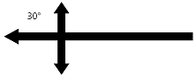
- 습곡축이 30° 왼쪽으로 침강하는 배사구조
- 습곡축이 30° 왼쪽으로 침강하는 향사구조
- 습곡축이 30° 오른쪽으로 침강하는 배사구조
- 습곡축이 30° 오른쪽으로 침강하는 향사구조
(정답률: 72%)
26. 지진파의 특성에 대한 설명으로 옳은 것은?
- 다른 지점에 가장 먼저 도착하는 파는 횡파이다.
- 기체나 액체는 종파는 통과시키나 횡파는 통과시키지 않는다.
- 종파와 L파는 각거리로 103, 지표의 거리로 11400km까지 직내부를 통해 직접 전해진다.
- 진동이 크고 파장이 긴 지진파로 지표를 따라 사방으로 전해지며 최후에 도달하는 파는 종파이다.
(정답률: 79%)
27. 다음 중 서로 반대개념끼리 올바르게 짝지어진 것은?
- Horst - Fenster
- Klippe - Window
- thrust - Reverse fault
- Transform fault - Strike slip fault
(정답률: 72%)
28. 충상단층(thrust fault)에 관한 설명으로 옳지 않은 것은?
- 충상단층의 경사면(thrust ramp) 위로 충상단층 판(thrust sheet)이 이동하면서 생긴 습곡은 경사배사(ramp anticline)이다.
- 한 개 이상의 후부 브랜치선(trailing branch line)이 한 점에 일치하는 듀플렉스는 배사형 중합(antiformal stack)이다.
- 후방지로 경사진 듀플렉스(hinterland dipping duplex)에는 전부브렌치선(leading branch line)이 없다.
- 후부 인편 팬(footwall imbricate fan)을 이루는 충상단층들은 후방지(hinterland)에서 전면지 (foreland)의 순서로 발발한다.
(정답률: 71%)
29. 습곡된 면들의 극점(pole)을 투영하여 형성된 대원(great circle)의 극점을 구하여 습곡축의 방향을 구하는 방법은?
- 파이 다이아그램(π-diagram)
- 베타 다이아그램(β-diagram)
- 모어 다이아그램(Mohr-diagram)
- 블록 다이아그램(Block-diagram)
(정답률: 69%)
30. 하천망(drainage pattern)의 기본 유형 중 지구조 운동(tectonic process)의 영향을 가장 적게 받는 것은?
- 격자상 수계(trellis drainage)
- 방사상 수계(radial drainage)
- 수지상 수계(dendrictic drainage)
- 직교상 수계(rectangular drainage)
(정답률: 66%)
31. 선의 신장(elongation, ε)과 이차신장(quadratic elongation, λ)의 식으로 옳은 것은? (단, ℓ0는 초기 길이, ℓ은 변형 후 길이이다.)
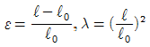
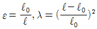
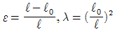
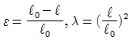
(정답률: 66%)
32. 대양저 산맥의 열곡 주위에 일반적으로 형성되는 단층은?
- 역단층
- 정단층
- 변환단층
- 충상단층
(정답률: 71%)
33. 대륙지각의 평균 밀도가 2700kg/m3일 때 지각하부 900m 깊이에서의 정암압력 (lithostatic pressure)은? (단, 중력가속도 g=9.8m/sec2이다.)
- 23.8 MPa
- 238 MPa
- 47.6 MPa
- 476 MPa
(정답률: 67%)
34. 도로 절개지에서 관찰되는 둥근 거력이 생성되는 작용은?
- 절리
- 용해작용
- 침식작용
- 구상풍화작용
(정답률: 84%)
35. 다음 표와 같이 4개의 지충이 전단작용에 의해 전단변형률(shear strain)이 발생하였을 때전체 지층의 평균 전단변형률 값은?
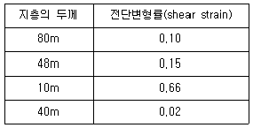
- 0.0⑤
- 0.13
- 0.66
- 0.93
(정답률: 73%)
36. 지구 내부에서 P파의 암영대(shadow zone)가 생기는 원인으로 옳은 것은?
- P파의 Moho면에서의 굴절과 반사
- P파의 맨틀/핵 경계부에서의 굴절과 반사
- P파의 외핵/내핵 경계부에서의 굴절과 반사
- 액체상태의 외핵을 통과하지 못하는 P파의 특성
(정답률: 64%)
37. 다음 그림은 하나의 배사구조를 형성하는 지형의 층리를 측정하여 입체투영(stereographic projection)한 것이다. 배사축의 선주향(trend)과 선경사(plunge)로 옳은 것은? (단, 층리면은 하반구에 π-diagram으로 표시)
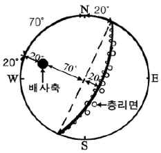
- 20°, 20°
- 20°, 70°
- 290° 20°
- 290°, 70°
(정답률: 72%)
38. 아래 지층 (1)의 퇴적시기로 옳은 것은? (단, 화성암 (2)의 관입시기는 1억 년 전이고, 화성암 (3)의 관입시기는 7000만 년 전이다.)
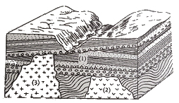
- 7000만 년 이전
- 7000만 년 ~ 1억 년 전 사이
- 1억 년 이후
- 알 수 없다.
(정답률: 86%)
39. 다음 그림의 a, b, c, d에 대한 용어로 옳지 않은 것은?
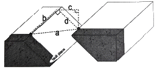
- a - net slip
- b - strike slip
- c - heave
- d - throw
(정답률: 62%)
40. 다음 그림이 나타내는 단층은?
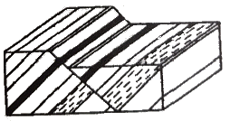
- 경사단층
- 사교단층
- 주향단층
- 회전단층
(정답률: 60%)
3과목: 탐사공학
41. 수평 2층 구조에 대한탄성파 굴절법탐사에서 상부층의 두께를 계산하기 위해 주시곡선에서 분석하여야 하는 값이 아닌 것은?
- 교차거리
- 시간절편
- 임계거리
- 각 층의 속도
(정답률: 54%)
42. 지하 투과 레이다 탐사법(GPR)에서 1GHz 안테나의 펄스 주기는?
- 1 s
- 10 ms
- 1 ms
- 1 ns
(정답률: 63%)
43. 탄성파 탐사 중 굴절법 탐사에서 이용되는 파는?
- P파
- S파
- L파
- R파
(정답률: 80%)
44. 해발고도 100m 위치에서 중력탐사를 실시하였을 때 프리에어(free-air)보정 값은?
- 30.86 mGal
- 30.86 g.u.
- 3.086 mGal
- 3.086 g.u.
(정답률: 70%)
45. 다음 중 전기탐사에서 수평탐사와 수직탐사를 가장 경제적으로 동시에 수행할 수 있는 전극배열은?
- 단극 배열
- 웨너 배열
- 쌍극자 배열
- 슐럼버저 배열
(정답률: 63%)
46. 암석이 수백℃의 고온에 이르면 자성을 잃게 되는 성질을 이용하여 지열의 부존을 확인하는 탐사 방법은?
- MT 탐사
- Curie 점법
- P파 지연법
- 슐럼버저 배열
(정답률: 76%)
47. 다음 중 탐사의 심도가 가장 깊은 물리 탐사법은?
- MT 탐사
- 전기비저항탐사
- 지오레이더 탐사
- 소형루프전자 탐사
(정답률: 71%)
48. 상향 연속(upward continuation)이란 어느 탐사 결과의 해석에서 사용되는 용어인가?
- 중력탐사
- 방사능탐사
- 지화학탐사
- 탄성파탐사
(정답률: 65%)
49. 지구화학탐사에서 분석 자료의 배경값과 이상값을 구별하는 방법이 아닌 것은?
- 등고선의 작성
- 예비조사 결과의 이용
- 평균값과 표준편차의 이동
- 문헌에 발표된 자료와의 비교
(정답률: 75%)
50. 자력탐사에서 관심의 대상이 되는 가장 중요한 물질과 자성을 올바르게 짝지은 것은?
- 석영, 장석류 - 반자성
- 휘석류, 각섬석류 - 상자성
- 자철석, 자류철석 - 페리자성
- 적철석, 티탄철서 - 반강자성
(정답률: 75%)
51. 방사능탐사에서 주목되는 원소가 아닌 것은?
- K
- U
- Ca
- Th
(정답률: 85%)
52. 다음 그림은 전자탐사의 1차장, 2차장 및 합성장을 나타내는 백터도이다. 2차장의 동상성분은?
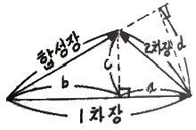
- a
- b
- c
- d
(정답률: 63%)
53. GPR탐사에서 레이더파의 반사계수에 가장 큰 영향을 미치는 물성은?
- 공극률(porosity)
- 유전상수(dilectric constant)
- 투자율(magmetic premeqbility)
- 전기전도도(eletric conduction)
(정답률: 66%)
54. 전기 비저항이 낮은 평탄한 지역에서 지표 전기비저항 탐사를 수행할 경우 나타나는 현상과 그 대처 방안에 대한 설명으로 옳은 것은?
- 측정값이 매우 커지므로 전극 간격을 넓게 하는 것이 유리하다.
- 측정값이 음의 값을 보일 경우 절대값을 취하여 해석에 사용한다.
- 측정값이 0에 가까운 경우는 측정 장비의 고장이므로 수리해야 한다.
- 측정값이 매우 작으므로 가능한 신호대 잡음비가 높은 전극배열을 사용한다.
(정답률: 75%)
55. 균질한 매질에서 P파의 속도(Vp)와 밀도(ρ)의 관계로 옳은 것은?
- VP∝ρ
- VP∝√ρ
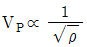
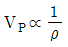
(정답률: 72%)
56. 0℃, 760 mmHg의 공기 중에서 1cm3 당 단위 정전하를 띠도록 하는 방사선을 의미하는 단위는?
- 퀴리
- 뢴트겐
- 암페어
- 패러데이
(정답률: 75%)
57. 지구화학탐사에서는 토양, 암석, 퇴적물 및 기타 다른 물질로부터 미량성분을 추출하는 데 여러 가지 방법들을 적용하고 있다. 아래에서 설명하고 있는 추출방법은?
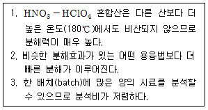
- 휘발법
- 강산추출
- 부분추출
- 약산추출
(정답률: 79%)
58. 항공 자력탐사에 대한 설명으로 옳지 않은 것은?
- 개략탐사로서 신속하다.
- 탐사면적 당 경비가 저렴하다.
- 지형 및 인공적인 장애요소의 극복이 쉽다.
- 광체탐사와 같은 비교적 소규모 탐사에 적용된다.
(정답률: 84%)
59. 임펄스(impulse)형 탄성파 에너지원이 아닌 것은?
- 스파커(Sparker)
- 에어건(Air-gun)
- 다이너마이트(Dynamite)
- 바이브로사이스(Vibroseis)
(정답률: 69%)
60. 감마선의 컴프턴 산란을 이용하여 암석의 체적밀도를 측정하는 물리 검층법은?
- 밀도검층
- 중성자 검층
- 스펙트럼 검층
- 자연감마선 검층
(정답률: 81%)
4과목: 지질공학
61. 낙석방지공법 중 전단강도의 증가나 전단응력의 감소를 목적으로 하는 안정화 공법이 아닌 것은?
- 록볼트나 케이블 앵커 설치
- 표면피복이나 배수공의 설치
- 법면 바닥에 낙석방지 울타리 설치
- 그라우팅에 의한 절리나 균열의 폐색
(정답률: 66%)
62. 다음 중 풍화와 관련한 일반적인 설명으로 가장 거리가 먼 것은?
- 고온다습한 환경에서 화학적 풍화가 빠르게 진행된다.
- 고온건조한 사막지역에서도 일교차에 의한 풍화가 진행된다.
- 평지보다는 지형의 기복이 큰 지역에서 물리적 풍화의 속도가 빠르다
- 화학적 풍화에 의한 표토층의 깊이는 강수량보다 온도의 영향을 크게 받는다.
(정답률: 77%)
63. 모래로 채워진 관에서 Darcy의 법칙을 이용하여 유출량 Q를 계산하기 위한 3가지 요소가 아닌 것은?
- 단면적
- 수리경사
- 투수계수
- 유선의 수
(정답률: 73%)
64. 산사태의 직접적인 요인 중 강우에 대한 설명으로 옳은 것은?
- 산사태 발생요인 중 가장 영향을 적게 미치는 요인이다.
- 선행강우량과 달리 강우강도의 개념은 붕괴랑 관련이없다.
- 선행강우량에 의해 발생하는 산사태는 일시적이고 소규모이다.
- 간극수압의 상승, 표면유수에 의한 침식, 흙의 포화로 인한 활동토층의 단위중량증가 등의 원인에 의해 붕괴가 발생한다.
(정답률: 72%)
65. 비산출률(specific yield)과 비보유율(specific retention)과의 관계를 바르게 나타낸 것은?
- 비산출률은 비보유율보다 항상 적다.
- 비산출률은 비보유율보다 항상 크다.
- 비산출률은 비보유율의 합은 공극률과 같다.
- 비산출률은 비보유율의 합은 공극률보다 크다.
(정답률: 69%)
66. 암석이나 암반의 압축강도를 측정하는 시험법으로 적당하지 않은 것은?
- 절리면 전단시험
- 일축압축시험
- 슈미터햄머 사험
- 점하중 강도시험
(정답률: 78%)
67. 암반 내의 인장균열(Tension fracture)에 대한 설명으로 옳지 않은 것은?
- 절리(joint)는 인장균열에 해당된다.
- 최소주응력에 수직 방향으로 형성된다.
- 균열면을 따라 상대적인 이동이 거의 없다.
- 최대주응력 방향과 대략 30°내외의 각을 이룬다.
(정답률: 63%)
68. 흙 전체(bulk soil)의 비중이 1.80이고, 흙 입자(solid soil)의 비중이 2.40인 흙의 시료의 함수비가 25%라면 간극률은?
- 0.3
- 0.4
- 0.5
- 0.6
(정답률: 52%)
69. 두께 5m의 점토층이 20 t/m2의 하중을 받았을 때 최종 침하량이 3cm였다면, 이 층의 체적변화계수는?
- 3.0×10-6cm2/g
- 1.5×10-6cm2/g
- 1.5×10-3cm2/g
- 6.5×10-3cm2/g
(정답률: 52%)
70. Q법에 의한 암반 분류법에서 매개 변수로 사용되지 않는 인자는?
- 절리군의 수
- 절리면의 전단강도
- 절리면의 거친 정도
- 절리면의 충진물이나 변질정도
(정답률: 40%)
71. 그림에서 유체의 흐름은 일정하고(steady), 유출속도(v)도 2m/day로 일정하다. 또한, A와 B 지점 사이의 투수계수 KAB=10m/day이며, A 지점의 수두 hA=10m이다. 이때 B 지점에서의 수두는?
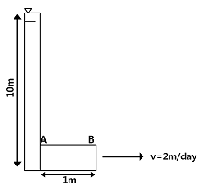
- 8.6 m
- 9.8 m
- 10 m
- 10.4 m
(정답률: 70%)
72. 다음 지반개량공법중 화학적 개량공법이 아닌 것은?
- 약액 주입 공법
- 생석회 말뚝 공법
- 페이퍼 드레인 공법
- 심층 혼합 처리 공법
(정답률: 71%)
73. 다음 중 점하중강도시험(Point load strength test)에 대한 설명으로 옳지 않은 것은?
- 점하중강도시험은 현장 및 실험실에서 실시할 수 있다.
- 크기 보정 점하중강도는 일축압축강도는 1/24정도이다.
- 점하중강도 시험에 사용되는 시험편은 성형할 필요가 거의 없다.
- 시험에서 구한 점하중강도는 전단강도를 추정하는데 이용된다.
(정답률: 70%)
74. 다음 중 Q-system의 값을 산정하는 식에 사용된 항목에 대한 설명으로 옳은 것은?
- RQD/Jn : 블록의 크기
- Jw/SRF : 지하수상태
- Jτ/Ja : 블록간의 압축강도
- Jw/Jn : 블록간의 전단강도
(정답률: 69%)
75. 댐의 위치를 조사할 때 고려할 사항과 가장 거리가 먼 것은?
- 풍화의 깊이
- 지하수면 위치
- 지하수의 존재유무
- 기반암의 물리적 특성
(정답률: 62%)
76. 우물에서 적정 양수량을 결정하기 위해 실시되는 양수시험의 종류가 아닌 것은?
- 정수위시험
- 군정시험
- 대수층시험
- 단계양수시험
(정답률: 60%)
77. 터널공사에서 유의해야 할 지질분포 지역중 상대적으로 안전한 지역은?
- 단층지역
- 산사태지역
- 물이용이 적은 지역
- 애추퇴적물(talus) 지역
(정답률: 88%)
78. 어떤 토양시료의 공극율을 n(%), 공극비를 e라 할 때 공극율(Porosity)과 공극비(Voidratio)의 관계를 바르게 나타낸 것은?
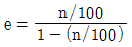
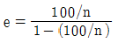
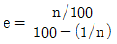
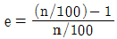
(정답률: 79%)
79. 지반에 대한 다짐을 수행하여 지반의 특성을 향상시키고자 할 때 흙의 다짐정도에 영향을 미치는 요소가 아닌 것은?
- 함수비
- 다짐에너지
- 흙의 투수계수
- 흙의 입도 분포
(정답률: 51%)
80. 결함이 없는 신선한 암석의 조건이 다음과 같을 때, 이 암석의 P파 속도는?
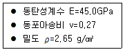
- 4.51 km/s
- 4.61 km/s
- 4.71 km/s
- 4.81 km/s
(정답률: 52%)
5과목: 광상학
81. 다음 중 화성광상에 속하지 않는 것은?
- 열수광상
- 증발광상
- 정마그마광상
- 페그마타이트광상
(정답률: 74%)
82. SiO2를 포함하는 마그마와 석회암과의 작용에 의하여 생성되는 중요한 접촉변성 광물은?
- 석석
- 형석
- 규회석
- 백운모
(정답률: 59%)
83. 다음 중 해양지각을 구성하는 물질은 주로 어떤 암석으로 구성되어 있는가?
- 사암
- 석회암
- 화강암질암
- 현무암질암
(정답률: 75%)
84. 우리나라의 주요 금속광상 중 성인상 분류 시 광상유형별 대표적인 광상의 연결로 옳지 않은 것은?
- 열수교대광상 : 연화, 울산
- 각력파이프상광상 : 달성, 일광
- 열극충진맥상광상 : 함안, 고성
- 마그마분화광상 : 연천, 소연평도
(정답률: 63%)
85. 다음 중 탄산염 광물이 아닌 것은?
- 능철석
- 방해석
- 중정석
- 능망간석
(정답률: 57%)
86. 다음 중 동생광물에 해당하는 것은?
- 기성광상
- 열수광상
- 정마그마광상
- 페그마타이트광상
(정답률: 54%)
87. 광화작용의 전단계인 광화준비작용은 모암의 성질이나 열, 유체, 작용압력 등에 따라 상이한 특징을 보여 준다. 다음 중 지표천부에 형성 가능한 광상의 광화준비작용에 해당하지 않는 것은?
- 습곡작용, 팽창작용 등에 의한 지층의 형태변화
- 규화작용, 백운석화작용, 재결정작용 등 모암변질작용
- 파쇄, 분열, 절리작용, 단층(재단층)작용, 등 국지적 구조 활동
- 심부 마그마의 상승에 의한 주변암석동화(assimilation)작용
(정답률: 53%)
88. 다음 중 광화작용이나 변질작용의 형성온도를 직·간접적으로 측정하는 방법에 해당하지 않는 것은?
- 유체포유물
- 광물의 용융점
- 광물의 합성법
- 방사성동위원소비
(정답률: 61%)
89. 반암 동광상에 주로 수반되는 변질작용으로 구성된 것은?
- 강옥 변질과 칼륨 변질
- 칼륨 변질과 필릭 변질
- 녹니석 변질과 황옥 변질
- 탄산염 변질과 강고령토 변질
(정답률: 67%)
90. 다음 중 광석광물의 생성순서를 파악하는 구조(조직)나 특징과 관계가 없는 것은?
- 포유물(inclusion)
- 가정구조(pseudomorph structure)
- 횡단구조(cross-cutting structure)
- 행인상조직(amygdaloidal texture)
(정답률: 63%)
91. 다음에서 설명하는 광물은 무엇인가?
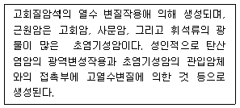
- 활석
- 흑연
- 벤토나이트
- 마그네사이트
(정답률: 56%)
92. 지각구성의 8대 원소에 포함되지 않는 것은?
- 규소
- 산소
- 수소
- 칼륨
(정답률: 80%)
93. 다음 중 스카른광물이 아닌 것은?
- 카보나타이트
- 규회석
- 스캐폴라이트
- 투휘석
(정답률: 58%)
94. 다음 중 세계적인 철산지로 유명한 키루나(Kiruna)광상이 속하는 광상은?
- 기성광상
- 열수광상
- 접촉교대광상
- 정마그마광상
(정답률: 57%)
95. 화학적 풍화작용은 용해도가 큰 광물질을 제거하고 용해도가 낮은 광물질을 농집시키는 결과를 초래한다. 이러한 과정에 의하여 생성된 광상의 유형은?
- 사광상
- 잔류광상
- 증발광상
- 2차 부화광상
(정답률: 59%)
96. 태코나이트(taconite) 암석은 어떤 금속을 함유하고 있는가?
- 동
- 망간
- 철
- 중석
(정답률: 56%)
97. 초벌구이 자기(瓷器) 표면에 광물을 대고 그으면 나오는 광물의 분말 색깔을 칭하는 것은?
- 경도
- 광택
- 벽개
- 조흔
(정답률: 90%)
98. 우리나라의 천열수형 금·은 광상에 대한 설명으로 옳지 않은 것은?
- 주된 광화시기는 백악기말이다.
- Au/Ag 비는 5 : 1 ~ 8 : 1 정도이다.
- 생성심도는 일반적으로 750m 미만이다.
- 천열수형 광상으로는 통영광상, 금령광상 등이 있다.
(정답률: 73%)
99. 우리나라에서 반암 동광상이 보고된 지역은?
- 태백산 지역
- 경상분지 지역
- 음성분지 지역
- 경기변성대 지역
(정답률: 60%)
100. 다음 중 황화광물과 그 활용도의 연결이 옳지 않은 것은?
- 진사 - 수은 생산
- 방연석 - 납 생산
- 황동석 - 주석 생산
- 황철석 - 황산 생산
(정답률: 59%)